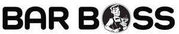

Trade Mark Journal No.2025/032 8 August 2025
UK00004240341 28 July 2025 (6,7,8,9,11,16,17,20,21,24,27,34)
Mark 1
Mark 2

- Class 6
- Metal bottle stoppers; spigots [stoppers] of metal; bottle holder; bottle holders predominantly of metal; metal stoppers for bottles; stoppers of metal; metal bottle caps; bottle caps of metal; bottle fasteners of metal; bottle closures of metal; bottle crates of metal; mountings of metal for glass; muzzles for clamping corks to sparkling wine bottles; wine casks of metal; dispensers, of metal; metal kegs; faucets of metal for casks; trays of metal; metal casks; casks of metal; beer vent taps of metal.
- Class 7
- Beer pumps; pumps for beer; drip trays for beer pumps; electric blenders; liquid blenders being machines; liquid blenders [machines]; food blenders (electric -); blenders for food [electric]; food blenders, electric; electric food blenders; mixers [kitchen machines]; electric juicers; utensils (electric -) for blending liquids; electric kitchen mixers; liquid aerators [machines]; peelers [electric machines]; coffee grinders, other than hand-operated; juice extractors [machines]; utensils (electric -) for mixing liquids.
- Class 8
- Wine bottle foil cutters, hand-operated; foil cutters for wine bottles; hand-operated tin openers; cutlery; spoons; stirrers [hand tools]; ice picks; silverware [cutlery, forks and spoons]; forks [cutlery]; fruit knives; knives.
- Class 9
- Optics for measuring liquids including alcohol; jiggers for measuring liquids including alcohol; thimble measure for measuring liquids including alcohol; gill measures for measuring liquids including alcohol; spirit measures; liquid dosage devices that measure the amounts to be dispensed; measuring spoons; measuring spoons for measuring liquids including alcohol; measuring glassware; measuring glassware for measuring liquids including alcohol; measuring cups; measuring cups for measuring liquids including alcohol; measuring jugs; measuring jugs for measuring liquids including alcohol; jigs [measuring instruments]; jigs [measuring instruments] for measuring liquids including alcohol.
- Class 11
- Fridges for cooling beverages; fridges for bottled beverages; bottle coolers being apparatus; bottle warming apparatus; apparatus for dispensing chilled beverages; apparatus for dispensing chilled carbonated beverages; wine refrigerators; refrigerated cabinets for the storage of drink; electric wine coolers; ice dispensing apparatus; apparatus for dispensing ice; apparatus for refrigerating beverages; beverages cooling apparatus; heating and cooling apparatus for dispensing hot and cold beverages.
- Class 16
- Beer mats of paper; paper mats for beer glasses; cocktail mats of paper; drip mats of cardboard; drip mats of paper; drip mats of card; adhesive stickers to prevent drink tampering; paper to prevent drink tampering; adhesive stickers of paper to prevent drink tampering; napkin paper; table napkins of paper; napkins of paper (table -); paper table napkins; paper napkins; napkins of paper; disposable napkins; table cloths of paper; paper table cloths; serviettes of paper; paper serviettes; table linen of paper; paper table linen; tablecloths of paper; paper tablecloths; hygienic hand towels of paper; tablemats of paper; paper washcloths; paper cocktail parasols; paper handtowels; paper towels; towels of paper; mats of paper for beer glasses; mats of paper for drinking glasses; dinner mats of cardboard; table mats of cardboard.
- Class 17
- Rubber stoppers for bottles; plastic tubing; plastic tubes; plastic flexible pipes; rubber stoppers; stoppers (rubber -); spigots [stoppers] of rubber; non-slip pads of rubber.
- Class 20
- Bottle racks; bottle stoppers, not of glass, metal or rubber; non-metallic displays, stands and signage; printed vinyl signs; non-metallic bottle holder; non-metallic bottle holders; shelves; metal shelving; metal shelving being speed rails; non-metallic shelving being speed rails; barrels and casks, non-metallic; wine racks; racks [furniture] for casks; stoppers for bottles, not of glass, metal or rubber; plastic stoppers for bottles; bottle crates [other than of metal]; stoppers, not of glass, metal or rubber; spigots [stoppers], not of glass, metal or rubber; non-metal bottle caps; caps, not of metal (bottle -); bottle caps, not of metal; stoppers of cork; stoppers, not of metal; bottle fasteners, not of metal; bottle closures, not of metal; closures (bottle -), not of metal; bottle closures not of metal; screw tops, not of metal, for bottles; non-metal caps for bottles; closures (bottles -), not of metal; plugs [stoppers] not of metal; non-metallic bottle caps; bottle rails; barstools.
- Class 21
- Siphons for carbonated water; bottle pourers; siphon bottles for aerated water; beer mats not of paper or textile; beer pitchers; foam drink holders; wine drip collars specially adapted for use around the top of wine bottles to stop drips; drinking straws; drinking straw dispensers; drinking glasses; cocktail stirrers; ice scoops [barware]; glasses, drinking vessels and barware; cocktail glasses; cocktail shakers; cocktail picks; cocktail sticks; manual mixers being cocktail shakers; cocktail shakers; cocktail strainers; cocktail muddlers; drink stirrers; beverage glassware; beverage stirrers; mixing spoons; bar spoons; serving trays; drinking glass holders; bottle bins; bins; cork screws; reusable ice cubes; ice cube trays; ice buckets; ice pails; coolers being ice pails; containers for ice; fitted liners for ice buckets; ice tongs; bottle openers; non-electric bottle openers; bottle openers incorporating knives; bottle pourers; champagne buckets; wine buckets; wine openers; bottle coolers; bottle buckets; bottle brushes; bottles; wine bottle cradles; bottle stands; glass bottles; glass stoppers for bottles; vacuum pumps for wine bottles; storage racks for glasses storage racks for bottles; shelf liners of plastic; bottle openers, electric and non-electric; drip preventers for bottles; plastic drinking glasses; paper drinking glasses; plastic cups; pint glasses; tumblers being glasses; wine glasses; shot glasses; margarita glasses; pilsner glasses; schnapps glasses; chopping boards; cutting boards; knife boards; carving boards; wooden chopping blocks [utensils]; washing boards; fruit muddlers; beer jugs; beer steins; beer glasses; beer mugs; siphon bottles for carbonated water; cooling buckets for wine; wine coasters of precious metal; jugs of precious metal; glass decanters; beverageware; decanters; coasters (tableware); wine decanters; whisky glasses; tankards; drinking steins; wine pourers; mixers, manual [cocktail shakers]; stirrers (drink -); coffee grinders, hand-operated; hand-operated coffee grinders; bottle openers [hand-operated]; strainers; sugar tongs; honey stirrers; shakers; ice scoops; ice cream scoops; scoops for ice; lemon squeezers; sieves.
- Class 24
- Bar cloths; mats of textile for beer glasses; mats (drip -) of textile for glasses; drink coasters of table linen; mats [coasters] of textile; table mats, not of paper; table mats (not of paper); dinner mats of textiles; lace table mats not made of paper; mats of linen; table cloths; glass cloths [towels]; plastic table cloths; table cloths of textile; tea cloths; kitchen towels of cloth; cloth napkins; cotton cloths for cleaning; textile napkins; household cloths for drying glasses; table cloths not of paper; table napkins of textile; napkins of textile (table -); dish cloths of textile for drying; cloth coasters; disposable cloths; waterproof cloths; textile smallwares.
- Class 27
- Floor mats of rubber; rubber mats; floor mats; floor mats of cork; paper floor mats; floors coverings of rubber; non-slip floor mats for use under apparatus; mats; non-slip mats; door mats of India rubber; cork mats; underlay for mats; protective floor coverings; carpet tiles for covering floors.
- Class 34
- Ashtrays; ashtrays for smokers; smoking urns; firestones for lighters for smokers; ashtrays for smokers made of non-precious metals; ashtrays of precious metal; ashtrays for smokers made of precious metals; lighters for smokers; smokers (lighters for -); tobacco spittoons; tobacco containers and humidors; cigarette ash receptacles; pipe stoppers [smokers requisites]; portable cigarette ash pouches; devices for extinguishing heated cigarettes, cigars and heated tobacco sticks; devices for extinguishing heated cigarettes and cigars as well as heated tobacco sticks.
DIRECT INDEPENDENT IMPORTS LIMITED
Representative: Swindell & Pearson Limited